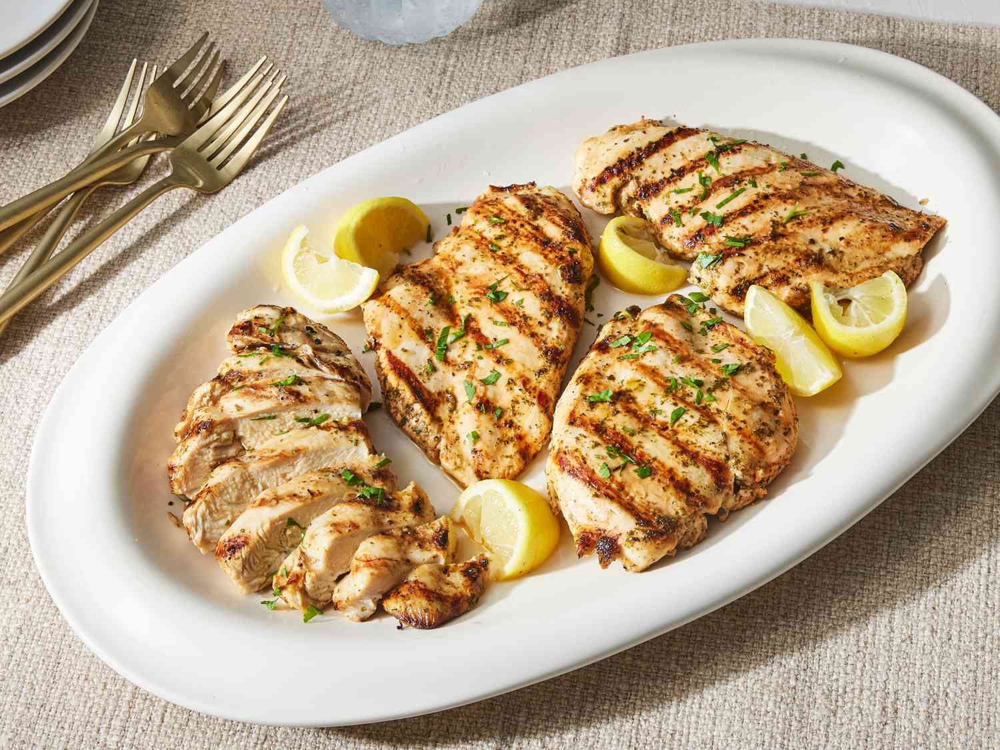

Grilled Chicken Breast Recipe:

Discription:
The best grilled chicken breasts you'll ever make begin with a basic marinade and end with the best technique for perfect cooking,
complete with beautifully-executed grill marks.
Every home cook needs a perfect recipe—that’s where we come in. Learn how to grill
chicken breasts at home with this tried-and-true, test kitchen-approved recipe.
Ingredients:
- 4 Skinless, boneless chicken breast halves
- 1/4 cup lemon juice, plus wedges for serving
- 1/4 cup olive oil
- 2 teaspoons dried oregano or parsley
- 1 teaspoon seasoning salt
- 1/2 teaspoon ground black pepper
- 1/2 teaspoon onion powder
Directions:
-
Gather the Ingredients
-
Preheat an outdoor grill for medium_high heat, and lightly oil
-
Workign with one chicken breast at a time, place chicken breast between
two sheets of plastic wrap or parchment paper on a cutting board.
Using a meat maller or a rolling pin, gently pound eash breast to 1/2-inch thickness.
-
Add lemon juice, olive oil, dried oregano or parsley, seasoning salt, black pepper, and onion powder to a large zip-top bag;
add chicken and press out as much air as possible before sealing bag.
Gently massage chicken to distribute marinade. Marinate chicken in the refrigerator for at least 30 minutes or up to 12 hours.
-
Preheat grill to medium-high and lightly oil the grate.
-
Place chicken breasts, smooth-side down on preheated grill;
cook, coveredm until no longer pink and juices run clear, about 5 minutes per side.
An instant-read thermometer inserted into the center should read at least 165 degrees F (74 degrees C).
-
Transfer chicken to a cutting board and tent with aluminum foil. Let rest 5 minutes.
-
Serve with lemon wedges.
Back to Home Page